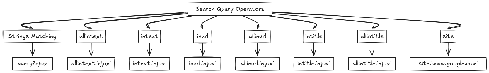

Functional Requirements
- User will be able to enter the query text they want to perform just a word. Example
# assume they are dorking for this word
njox/
The question: How do I preview the results of the project.
- After the user has entered query we will provide results based on query for the following things only for
version 1of the project.
The following are the list of category that will be used first.
| Category | Meaning / Query Example |
|---|---|
| Strings matching | "query" — assumes the user has searched for this query. Example: "query?njox" |
| allintext | Search for pages containing all the specified keywords in the text. Example: allintext:"njox security" |
| intext | Search for pages containing the keyword anywhere in the text. Example: intext:"njox" |
| inurl | Search for URLs containing the keyword. Example: inurl:"njox" |
| allinurl | Search for URLs containing all specified keywords. Example: allinurl:"njox tools" |
| intitle | Search for pages with the keyword anywhere in the title. Example: intitle:"njox" |
| allintitle | Search for pages with all specified keywords in the title. Example: allintitle:"njox osint" |
| site | Restrict search results to a specific site. Example: site:"example.com" |
| filetype | Search for files of a specific format. Example: filetype:"pdf" |
| link | Find external pages linking to a URL/page. Example: link:"njox.com" |
| numrange | Search within a numeric range. Example: numrange:321-325 |
| before / after | Filter results by date. Example: filetype:pdf before:2000-01-01 after:1999-01-01 |
| inanchor | Search for keywords in anchor text (links pointing to a page). Example: inanchor:"njox" |
| allinanchor | Anchor text must contain all keywords. Example: allinanchor:"njox cyber" |
| inpostauthor | Blog search: posts written by an author. Example: inpostauthor:"njox" |
| allinpostauthor | Must match all keywords in author field. Example: allinpostauthor:"njox" "lee" |
| related | Show pages similar to a given page. Example: related:www.google.com |
| cache | Show Google’s cached version of a page. Example: cache:www.google.com |

- Generate reports based on query and gives visualizations about the query made.